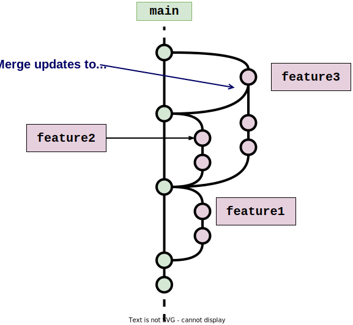
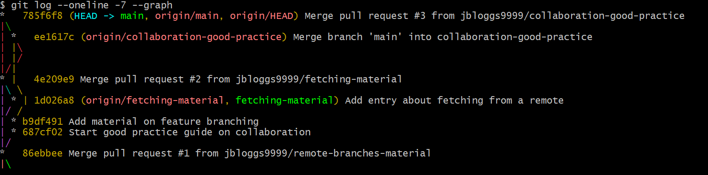

Collaborating with Branches#
Learning objectives#
Understand and implement feature branching for collaborative work
Create and manage feature branches on GitHub
Merge feature branches into the main branch following a specific protocol
Resolve conflicts and ensure smooth integration of changes from multiple collaborators
Utilize best practices for collaboration using Git and GitHub
Collaborating with others#
So far, we’ve only been using Git and GitHub as a solo developer. But the real power of version control systems is realised when collaborating with other developers on a shared project. Branching in Git provides the means for multiple people in a way that allows them to work concurrently and bring their work together in a controlled, transparent way. If you’re using GitHub to host your remote repository, then pull requests provide a way to communicate to others about your changes.
The key thing to remember when collaborating with Git is that, while there may only be a single remote repository, every developer has their own local repository that is linked to the remote repository. The corollary to this is:
each developer is responsible for pushing the work from their local repository to the remote one; and
each developer needs to pull in work that others have contributed to the remote repository into their local repository.
It’s important that this is done promptly and regularly so that any changes are not missed by you or others.
There are different strategies and philosophies on how branches can be used for collaboration. For this course, we’re going to discuss a simple strategy called feature branching.
Feature branching#
A feature in this context is any piece of work that adds to the
software’s overall development, whether this be a new piece of functionality, a
bug fix, some documentation, etc. In feature branching, new features are
developed in their own, dedicated feature branches that branch off the
main branch. When the feature is ready to be shared with others, the feature
branch is merged back into main.
The main branch and feature branches take on different roles:
The
mainbranch: This includes code changes that you want to share with each other, or that are ready for release into the world. You should consider it the ‘neat’ version of your work. As a general rule, code only makes it intomainthrough merging a feature branch. You don’t commit directly tomain.Feature branches: These are branches where you work on code to develop features, so will contain ‘work in progress’ until they’re ready to merge back into
main.
A common scenario you will come across when working on a feature branch is
where main gets updated through someone else merging a feature branch they’re
working on. When it comes to you merging your feature branch into main, the
golden rule is to make sure you merge any changes to main into your
feature branch before merging your feature branch into main. This ensures
you are adding your work to the latest version of the ‘common’ codebase and
resolve any issues in your feature branch:
It gives you a chance to check that the changes you are making are consistent with other peoples’ work. Some changes made by others may pass under the radar when merging e.g. different naming of functions / variables to what your code relies on, deletion or moving of code your work relies on, etc.
It also gives you a chance to resolve any merge conflicts that may arise when you try to merge your work into the common codebase.
An example of feature branching is depicted below:

Creating feature branches#
We will be creating feature branches using the workflow described in the previous episode: feature branches will be created remotely on GitHub and then fetched in for us to work on locally.
Protocol for merging feature branches into main#
Below we give steps for merging a feature branch foo-feature into main. We
assume foo-feature exists both as a remote branch in the remote repository and
also a local tracking branch in our local repository.
Create a pull request on GitHub corresponding to the merge of
foo-featureintomain.Pull any changes to
mainon the remote repository into your local version ofmain(usinggit pullon your localmainbranch).a) If
mainwas unchanged by the pull then go to step 2, otherwise go to step b) below.b) If
maingot updated by the pull, then mergemainintofoo-featurein your local repository before continuing, by usinggit merge. If there are merge conflicts, these MUST be resolved and the merge intofoo-featurecompleted before continuing to step c) below (see the later episode on merge conflicts for details on how to do this). Also take the opportunity to make sure this merge hasn’t introduced any problems into the codebase (e.g. inconsistencies in naming, etc.)c) Pull the remote
maininto your localmainagain to be sure no further changes were made while you were performing the merge in step b). If the branch wasn’t updated then proceed to step 3 below, otherwise curse your luck and go back to step b).Push the commits in your local
foo-featurebranch to the corresponding remote branch.Complete the pull request on GitHub to merge the
foo-featurebranch intomainon the remote.Pull the changes to
mainfrom the remote repository into your local repository. Optional, but recommended: delete the feature branchfoo-featurefrom GitHub and from your remote repository (including the referenceorigin/foo-featureto the remote branch).
Example: Joe Bloggs and Jane Doe#
We’re now going to assume that Joe Bloggs and Jane Doe are two people collaborating
on the git-good-practice repository. They will work with the same
remote repository, created under Joe’s account, but will each have their own
associated local repositories. They’re going to use the feature branch
strategy, discussed in the previous section, to add:
Material to the cheatsheet about fetching remote branches from a remote repository.
A new file documenting good practice when collaborating together.
In order for two people to work on the same remote repository on GitHub, they each need to be listed as collaborators on the repository.
Collaborators on a GitHub repository#
If you are the owner of a repository on GitHub, you can invite collaborators to work on the repository using the instructions in the GitHub documentation.
Exercise#
At this point in the course, we encourage participants to pair up and work together on a common repository, taking the roles of Joe and Jane.
So, find a partner to work with. Have one of you invite the other as a collaborator on your repository. The collaborator should then clone the other person’s repository using the above instructions, so that you are both working on a common remote repository. In what follows, one of you should play the role of Joe Bloggs and the other of Jane Doe.
Solo work#
If you are working through these course notes by yourself then try imagining you are two different developers collaborating on the repository together. We suggest you clone a fresh copy of the remote repository to a new local repository on your computer, while keeping your original local repository. This will help you simulate the scenario of collaborators each having their own local repository.
Creating the branches#
Joe and Jane begin by creating remote branches on GitHub for their work, creating these at the same time:
Joe creates a remote branch called
fetching-material, which will contain material about fetching from a remote repository.Jane creates a remote branch called
collaboration-good-practice, which will contain work on good practice while collaborating.
Next, Joe and Jane need to each create a local branch that will track their remote branch.
Joe’s local branch#
Joe fetches references to the new branches in the remote repository, then
creates a new local branch to track his remote fetching-material branch (and
also checks out this new local branch):
$ git fetch
Username for 'https://github.com': jbloggs9999
Password for 'https://jbloggs9999@github.com':
From https://github.com/jbloggs9999/git-good-practice
* [new branch] collaboration-good-practice -> origin/collaboration-good-practice
* [new branch] fetching-material -> origin/fetching-material
$ git checkout fetching-material
Switched to a new branch 'fetching-material'
branch 'fetching-material' set up to track 'origin/fetching-material'.
Notice that the fetch creates references to both of the new remote branches,
fetching-material and collaboration-good-practice, which Joe and Jane created on
GitHub a moment ago. In contrast, Joe only has a local branch corresponding
to his remote fetching-material branch, since this is the branch he performed
the git checkout on:
$ git branch -a
* fetching-material
main
remotes/origin/HEAD -> origin/main
remotes/origin/collaboration-good-practice
remotes/origin/fetching-material
remotes/origin/main
Jane’s local branch#
Jane runs the analogous commands in her local repository, in this case creating
a local tracking branch for her collaboration-good-practice remote branch
instead:
$ git fetch
Username for 'https://github.com': janedoe9999
Password for 'https://janedoe9999@github.com':
From https://github.com/jbloggs9999/git-good-practice
* [new branch] collaboration-good-practice -> origin/collaboration-good-practice
* [new branch] fetching-material -> origin/fetching-material
$ git checkout collaboration-good-practice
Switched to a new branch 'collaboration-good-practice'
branch 'collaboration-good-practice' set up to track 'origin/collaboration-good-practice'.
$ git branch -a
* collaboration-good-practice
main
remotes/origin/HEAD -> origin/main
remotes/origin/collaboration-good-practice
remotes/origin/fetching-material
remotes/origin/main
Working on the feature branches#
Joe’s fetching-material feature branch#
Joe adds the following content to Git-cheatsheet.md:
## Syncing with a remote repository
`git fetch origin` — Retrieve references to new remote branches, and/or commits
that are contained in remote branches, from the remote
repository (referred to as `origin`).
He then commits it on his (local) fetching-material branch:
$ git add Git-cheatsheet.md
$ git commit -m "Add entry about fetching from a remote"
[fetching-material 1d026a8] Add entry about fetching from a remote
1 file changed, 7 insertions(+)
Checking the status, Joe confirms that his local fetching-material branch is 1 commit
ahead of the associated remote branch:
$ git status
On branch fetching-material
Your branch is ahead of 'origin/fetching-material' by 1 commit.
(use "git push" to publish your local commits)
nothing to commit, working tree clean
In order to back up his work and give Jane a preview of what he’s been doing,
Joe pushes the changes to his local fetching-material branch to the remote
origin/fetching-material:
$ git push
Username for 'https://github.com': jbloggs9999
Password for 'https://jbloggs9999@github.com':
Enumerating objects: 5, done.
Counting objects: 100% (5/5), done.
Delta compression using up to 8 threads
Compressing objects: 100% (3/3), done.
Writing objects: 100% (3/3), 494 bytes | 123.00 KiB/s, done.
Total 3 (delta 2), reused 0 (delta 0), pack-reused 0
remote: Resolving deltas: 100% (2/2), completed with 2 local objects.
To https://github.com/jbloggs9999/git-good-practice.git
86ebbee..1d026a8 fetching-material -> fetching-material
The history on Joe’s fetching-material branch now looks like this:
$ git log --oneline -5
1d026a8 (HEAD -> fetching-material, origin/fetching-material) Add entry about fetching from a remote
86ebbee (origin/main, origin/collaboration-good-practice, origin/HEAD, main) Merge pull request #1 from jbloggs9999/remote-branches-material
5125372 Add note about creating local tracking branches
3b918f2 Add entry about merging branches
51da8da Add entry about checking out a branch
Jane Doe and her collaboration-good-practice feature branch#
Jane creates a new file called Collaboration-good-practice.md in the
Good-practice-guides directory (which she includes as a stand-alone commit)
and adds the following content about the above feature branch strategy:
Best practice for collaboration#
A basic feature branch strategy#
A basic way to collaborate on a common repository is to use feature branching.
A feature in this context is any piece of work that adds to of the
software’s overall development, whether this be a new piece of functionality, a
bug fix, some documentation, etc. In feature branching, new features are
developed in their own, dedicated feature branches that branch off the
main branch. When the feature is ready to be shared with others, the feature
branch is merged back into main.
Like Joe, she then also pushes the new commits on her local
collaboration-good-practice to the associated remote branch,
origin/collaboration-good-practice:
$ git push origin
Username for 'https://github.com': janedoe9999
Password for 'https://janedoe9999@github.com':
Enumerating objects: 10, done.
Counting objects: 100% (10/10), done.
Delta compression using up to 8 threads
Compressing objects: 100% (7/7), done.
Writing objects: 100% (8/8), 1.04 KiB | 353.00 KiB/s, done.
Total 8 (delta 2), reused 1 (delta 0), pack-reused 0
remote: Resolving deltas: 100% (2/2), completed with 1 local object.
To https://github.com/jbloggs9999/git-good-practice.git
86ebbee..b9df491 collaboration-good-practice -> collaboration-good-practice
Having done this, her collaboration-good-practice history looks as follows:
$ git log --oneline -5
b9df491 (HEAD -> collaboration-good-practice, origin/collaboration-good-practice) Add material on feature branching
687cf02 Start good practice guide on collaboration
86ebbee (origin/main, origin/fetching-material, origin/HEAD, main) Merge pull request #1 from jbloggs9999/remote-branches-material
5125372 Add note about creating local tracking branches
3b918f2 Add entry about merging branches
Let us take a moment to point out that, at this point, origin/fetching-material
hasn’t been updated in Jane’s local repository, and neither has
origin/collaboration-good-practice been updated in Joe’s local repository.
This is because they haven’t yet fetched updates to the corresponding remote
branches from the remote repository. This underlines the
fact that the information about remote branches only
gets updated in local repositories when you tell Git to retrieve updates from
the remote, via git fetch or git pull.
Merging#
First to the pass: Joe#
Joe finishes his work before Jane does and so gets to work on merging his
feature branch into the main branch. Following the strategy that was discussed
in the episode Remote Branches with GitHub,
he creates a pull request associated to the merge.
Having done this, he checks that Jane hasn’t
merged any work into the remote main branch. He could do this by examining
the history of main on GitHub, or by checking out main and
pulling in any changes from the remote:
$ git checkout main
Switched to branch 'main'
Your branch is up to date with 'origin/main'.
$ git pull
Username for 'https://github.com': jbloggs9999
Password for 'https://jbloggs9999@github.com':
remote: Enumerating objects: 10, done.
remote: Counting objects: 100% (10/10), done.
remote: Compressing objects: 100% (5/5), done.
remote: Total 8 (delta 2), reused 8 (delta 2), pack-reused 0
Unpacking objects: 100% (8/8), 1.02 KiB | 17.00 KiB/s, done.
From https://github.com/jbloggs9999/git-good-practice
86ebbee..b9df491 collaboration-good-practice -> origin/collaboration-good-practice
Already up to date.
Recall that Your branch is up to date with 'origin/main'. after the
checkout in the above output only means that Git is not aware of any extra commits in
origin/main compared to main since the last fetch or pull. In this
case, the git pull command confirms that the local main branch was already up to date with
the remote repository’s main branch. It also shows that then new commits in the
origin/collaboration-good-practice that Jane’s working on have been fetched.
Since his main branch is fully up to date with
the remote version, Joe goes ahead and performs the merge of his feature branch
into main on GitHub, by completing the pull request. He then updates his local
main branch with the merged changes:
$ git pull
Username for 'https://github.com': jbloggs9999
Password for 'https://jbloggs9999@github.com':
remote: Enumerating objects: 1, done.
remote: Counting objects: 100% (1/1), done.
remote: Total 1 (delta 0), reused 0 (delta 0), pack-reused 0
Unpacking objects: 100% (1/1), 654 bytes | 93.00 KiB/s, done.
From https://github.com/jbloggs9999/git-good-practice
86ebbee..4e209e9 main -> origin/main
Updating 86ebbee..4e209e9
Fast-forward
Git-cheatsheet.md | 7 +++++++
1 file changed, 7 insertions(+)
Jane: merging after changes to main#
Jane is ready to merge her collaboration-good-practice feature branch into
main, so she creates a pull request linked to the remote feature branch.
As the feature branch protocol recommends, she checks to see whether her local
main branch is up-to-date with the remote repository:
$ git checkout main
Switched to branch 'main'
Your branch is up to date with 'origin/main'.
$ git pull origin
Username for 'https://github.com': janedoe9999
Password for 'https://janedoe9999@github.com':
remote: Enumerating objects: 4, done.
remote: Counting objects: 100% (4/4), done.
remote: Compressing objects: 100% (2/2), done.
remote: Total 4 (delta 3), reused 2 (delta 2), pack-reused 0
Unpacking objects: 100% (4/4), 974 bytes | 27.00 KiB/s, done.
From https://github.com/jbloggs9999/git-good-practice
86ebbee..4e209e9 main -> origin/main
86ebbee..1d026a8 fetching-material -> origin/fetching-material
Updating 86ebbee..4e209e9
Fast-forward
Git-cheatsheet.md | 7 +++++++
1 file changed, 7 insertions(+)
(Again, she could also have done this by looking at the history of main on
GitHub.) Jane finds that there have been changes made to the main branch while
she was working on her feature branch, as indicated by the line
86ebbee..4e209e9 main -> origin/main
Therefore, she merges her now updated main branch into her feature branch, to
ensure her feature branch includes the latest changes. (Note that she does
this locally, rather than on GitHub.)
$ git checkout collaboration-good-practice
Switched to branch 'collaboration-good-practice'
Your branch is up to date with 'origin/collaboration-good-practice'.
$ git merge main
Merge made by the 'ort' strategy.
Git-cheatsheet.md | 7 +++++++
1 file changed, 7 insertions(+)
She also then pushes her updated feature branch to the remote repository, so that her local and remote branches are synchronised.
$ git push
Username for 'https://github.com': janedoe9999
Password for 'https://janedoe9999@github.com':
Enumerating objects: 4, done.
Counting objects: 100% (4/4), done.
Delta compression using up to 8 threads
Compressing objects: 100% (2/2), done.
Writing objects: 100% (2/2), 325 bytes | 325.00 KiB/s, done.
Total 2 (delta 1), reused 0 (delta 0), pack-reused 0
remote: Resolving deltas: 100% (1/1), completed with 1 local object.
To https://github.com/jbloggs9999/git-good-practice.git
b9df491..ee1617c collaboration-good-practice -> collaboration-good-practice
Having done this, she now effectively starts the protocol for merging a feature
branch into main again. First she checks there haven’t been any further updates
to main:
$ git checkout main
Switched to branch 'main'
Your branch is up to date with 'origin/main'.
$ git pull
Username for 'https://github.com': janedoe9999
Password for 'https://janedoe9999@github.com':
Already up to date.
Having seen there are no further updates, she goes to GitHub and completes
the associated pull request, thus merging her remote
collaboration-good-practice feature branch into main in the remote
repository. Then she pulls down the new, merged changes from origin/main into
her local main branch:
$ git pull
Username for 'https://github.com': janedoe9999
Password for 'https://janedoe9999@github.com':
remote: Enumerating objects: 1, done.
remote: Counting objects: 100% (1/1), done.
remote: Total 1 (delta 0), reused 0 (delta 0), pack-reused 0
Unpacking objects: 100% (1/1), 648 bytes | 108.00 KiB/s, done.
From https://github.com/jbloggs9999/git-good-practice
4e209e9..785f6f8 main -> origin/main
Updating 4e209e9..785f6f8
Fast-forward
Good-practice-guides/Collaboration-good-practice.md | 11 +++++++++++
1 file changed, 11 insertions(+)
create mode 100644 Good-practice-guides/Collaboration-good-practice.md
Finishing up#
The merged changes added to main by Jane won’t feature in Joe’s local
repository until he pulls them into his local main branch. Having seen on
GitHub that Jane has completed her pull request, he duly makes sure his local
repository has these changes (making sure he’s on main to begin with):
$ git status
On branch main
Your branch is up to date with 'origin/main'.
nothing to commit, working tree clean
$ git pull
Username for 'https://github.com': jbloggs9999
Password for 'https://jbloggs9999@github.com':
remote: Enumerating objects: 5, done.
remote: Counting objects: 100% (5/5), done.
remote: Compressing objects: 100% (2/2), done.
remote: Total 3 (delta 2), reused 1 (delta 1), pack-reused 0
Unpacking objects: 100% (3/3), 829 bytes | 48.00 KiB/s, done.
From https://github.com/jbloggs9999/git-good-practice
4e209e9..785f6f8 main -> origin/main
b9df491..ee1617c collaboration-good-practice -> origin/collaboration-good-practice
Updating 4e209e9..785f6f8
Fast-forward
Good-practice-guides/Collaboration-good-practice.md | 11 +++++++++++
1 file changed, 11 insertions(+)
create mode 100644 Good-practice-guides/Collaboration-good-practice.md
Both Joe and Jane now have completely up-to-date local repositories.
Viewing a graph of history#
Feeling satisfied about a successful collaboration, Joe and Jane decide to take
a look at what they’ve just accomplished. One nice way to view history in the
repository when multiple branches are involved is to use the --graph option with git log.
This will pictorially represent the inter-relationships of the branches that
are involved in the commit history:
git log [options] --graph
Note: you may find it clearest to use this with the --oneline option.
From within Joe’s repository, the output of the graph looks like the following (viewing only the last 7 commits):

Let’s go through this output in more detail:
The commit
86ebbee(“Merge pull request #1 …”) is where Joe and Jane started their work.The vertical line represents the
mainbranch, that we’re currently on. After the starting commit, there are two more commits,4e209e9and785f6f8, that show where the feature branches where merged intomainon the remote.We can see the commit on Joe’s feature branch by following the purple line: the commit is
1d026a8, whereorigin/fetching-materialcurrently points. (It’s also where the local branchfetching-materialpoints, which we see because we are viewing Joe’s local repository.) The feature branch got merged into main at commit4e209e9(“Merge pull request #2 from jbloggs9999/fetching-material”)Jane’s feature branch commits start at
687cf02(“Start good practice guide on collaboration”) and continue along the yellow line. Note that commitee1617c(whereorigin/collaboration-good-practicecurrently points) is where Jane merged hermainbranch intocollaboration-good-practicelocally, after pulling in Joe’s merged changes tomain. Note also the red line connectingmainto this commit, indicating Jane’s merge.Finally, the latest commit
785f6f8(“Merge pull request #3 from jbloggs9999/collaboration-good-practice”) is the commit where Jane’s feature branch got merged into main on the remote.
Cleaning up#
At this point, Joe and Jane can delete their feature branches, both from the
local repository and the remote repository. There is no risk of losing work,
because everything has been merged into main, both locally and on the
remote repository. After doing this, the log of recent history looks
like this:
$ git log --oneline -7
785f6f8 (HEAD -> main, origin/main, origin/HEAD) Merge pull request #3 from jbloggs9999/collaboration-good-practice
ee1617c Merge branch 'main' into collaboration-good-practice
4e209e9 Merge pull request #2 from jbloggs9999/fetching-material
b9df491 Add material on feature branching
687cf02 Start good practice guide on collaboration
1d026a8 Add entry about fetching from a remote
86ebbee Merge pull request #1 from jbloggs9999/remote-branches-material